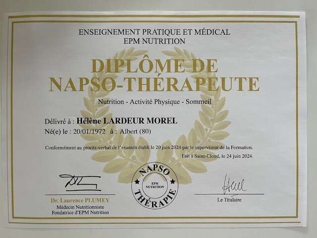
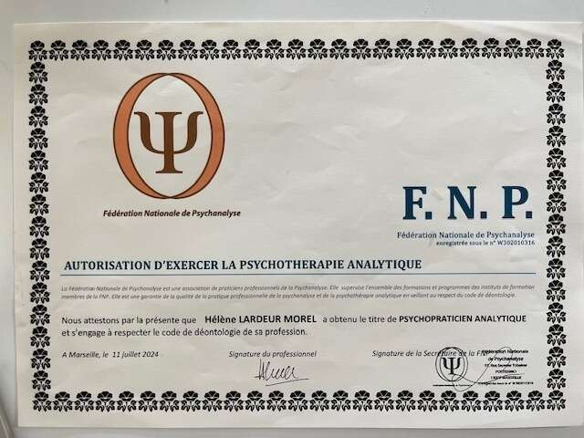
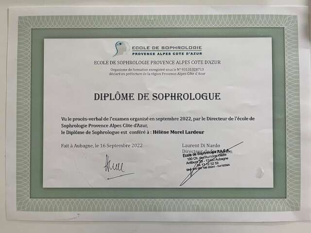

À propos de Hélène Lardeur, votre thérapeute
Psychopraticienne - Sophrologue - NAPSOthérapeute
Depuis mon adolescence, je nourris un intérêt profond pour le développement personnel et l'accompagnement de l'humain. Je me suis pourtant orientée vers une formation commerciale en intégrant une École Supérieure de Commerce. J'ai débuté ma carrière en France, en exerçant pendant neuf ans en tant que responsable commerciale B to B. Très vite, ce qui m'a le plus animée dans ce poste, ce n'était pas tant les produits que je représentais ni la vente, mais la richesse des relations humaines et le lien de confiance avec mes interlocuteurs.
Cette sensibilité m'a accompagnée dans la suite de mon parcours aux États-Unis, où j'ai occupé pendant cinq ans un double rôle de responsable médiathèque et de responsable du fundraising au sein d'une association dédiée à la promotion de la langue et de la culture française, fipamiami.org. Une mission porteuse de sens, au service du rayonnement culturel et du lien social.
Enfin, j'ai exercé six ans comme agent immobilier à Miami, en Floride, une activité où, là encore, l'écoute, la compréhension des besoins profonds et l'accompagnement personnalisé ont été au cœur de ma pratique.
Le psychologue Denis Doucet nous explique dans son livre 'Le principe du petit pingouin' éditions Québécor-2009 « Tout organisme vivant soumis à des caractéristiques environnementales inverses à sa nature va progressivement dépérir, ses besoins ne trouvant plus une réponse suffisante pour assurer son plein développement. »
La sur-adaptation c'est modifier nos valeurs et notre personnalité pour répondre aux exigences d'une situation, d'un environnement, parfois nocif. C'est sur ce trait de caractère que je me suis construite depuis la toute petite enfance jusqu'à ce que j'entame une psychothérapie en 2014...
Pendant longtemps, j'ai donné l'image d'une femme épanouie. Une jeunesse apparemment heureuse, une vie de couple équilibrée, une vie de famille comblée... en apparence. Et pourtant, derrière cette façade, des épreuves de vie sont venues me bousculer. Peu à peu, je me suis éloignée de moi-même, jusqu'à me perdre.
Ces moments difficiles ont été des déclencheurs ; J'ai décidé de ne plus subir ; J'ai choisi de me mettre en mouvement, d'entamer un chemin de reconstruction, un chemin vers moi. J'ai entrepris une psychothérapie ainsi qu'un travail psycho-corporel en profondeur. Cela m'a permis de me questionner, de prendre du recul sur ce que j'avais vécu, de comprendre mes schémas familiaux et relationnels, d'écouter les signaux de mon corps, et surtout, de me reconnecter à mon essence.
Avec engagement et ténacité, j'ai avancé pas à pas vers une vie choisie. Je retire de cette transformation un véritable épanouissement, une profonde satisfaction et un bien-Être durable. Aujourd'hui, je vis pleinement la vie que j'ai construite, en conscience, alignée avec mes valeurs.
Ce parcours personnel riche et exigeant est devenu le socle de mon engagement professionnel : Accompagner à mon tour celles et ceux qui souhaitent se reconnecter à eux-mêmes, se libérer de leurs souffrances, de leurs conditionnements, et avancer vers une vie plus juste, plus libre, plus vivante.
J'ai ainsi suivi des formations certifiantes en sophrologie et en psychothérapie. J'y ai reçu des enseignements riches et structurants, nourris de lectures passionnantes et éclairantes. J'ai également entrepris une tranche de psychanalyse, un chemin d'introspection exigeant mais fondamental.
Je suis engagée dans une analyse de ma pratique et de ma posture professionnelles au travers d'une supervision régulière auprès d'un psychanalyste. Mes compétences théoriques et pratiques, alliées à mes soft skills, constituent aujourd'hui les fondations solides de ma pratique.
Forte de mes 17 années d'expatriation, je suis particulièrement à l'écoute des problématiques que rencontrent les expatriés. Il est précieux de pouvoir parler à un thérapeute dans sa langue maternelle, et encore plus à quelqu'un qui a lui-même vécu l'expatriation, qui saura accueillir vos difficultés, vos souffrances avec bienveillance et vous accompagner vers un apaisement durable et des changements concrets.
Chaque accompagnement est unique, et je m'y engage avec autant de rigueur que d'humanité.
« Je me suis mis à être un peu gai, parce qu'on m'a dit que cela est bon pour la santé »
Mon approche
« Ce n'est pas une âme, ce n'est pas un corps que l'on dresse, c'est un homme. »
Mon approche s'inscrit dans une démarche à la fois intégrative, humaniste et systémique.
L'approche intégrative
L'approche intégrative considère la médecine conventionnelle comme un suivi essentiel, une nuance avec la dimension holistique qui a tendance à s'appuyer uniquement sur des techniques alternatives. J'encourage mes patients à consulter leur médecin généraliste, leur(s) médecin(s) spécialisé(s) afin d'avoir une vision biologique et biologique fonctionnelle. Prendre en compte leur état général de santé est essentiel pour que je les accompagne dans leur mieux-être.
L'approche humaniste
L'approche humaniste, développée par Abraham Maslow et Carl Rogers, est un courant de la psychologie fondé sur une vision positive de l'être humain. Elle consiste à valoriser la tendance actualisante de chaque individu, telle que sa capacité innée à grandir, s'épanouir et se réinventer. La psychologie humaniste s'appuie sur une relation psychothérapeutique authentique et bienveillante, centrée sur le patient plutôt que sur le trouble qui l'a mené à consulter. Cette pratique humaniste met ainsi l'accent sur le développement de la personne et sur l'importance d'exprimer ses ressentis, ses émotions et ses désirs. Elle vise à retrouver un bien-être intérieur, et ce, au quotidien.
L'approche systémique
L'approche systémique, vient de l'école Palo Alto. Elle considère l'individu comme faisant partie de plusieurs systèmes relationnels (familial, professionnel, social) qui, de part les échanges et les interactions, vont l'influencer. Cela pourrait modifier sa perception, sa pensée, son attitude ou encore son moral. L'analyse et la compréhension des relations humaines auxquelles un individu participe est l'une des caractéristiques fondamentales de l'approche systémique, afin d'en identifier les dysfonctionnements et résoudre les conflits humains.
J'ai choisi et suivi des formations complémentaires pour vous offrir cette approche multi-dimensionnelle, dans une dimension contemporaine. Je vous propose cette ouverture thérapeutique dans le souci de votre mieux-être. J'adapte la thérapie en fonction de vos besoins uniques, en respectant votre temporalité. Le but est de favoriser la découverte de soi, votre croissance personnelle, votre bien-être mental, émotionnel et physique.
Je vous reçois dans un espace sûr et sans jugement. Un espace qui vous est dédié où tout peut-être dit. Je vous assure une confidentialité totale. Vous êtes au bon endroit pour entamer un voyage vers votre bien-être.
Prenez soin de vous,
Prenez rendez-vous avec vous-même... Contactez moi...
Formations-Certifications
- Diplômée en sophrologie, et membre de la chambre syndicale de sophrologie. École Sophrologie PACA, certifiée RNCP et Qualiopi. 400 heures de formation. www.formation.sophropaca.com
- Diplômée en psychothérapie, et membre de la Fédération Nationale de Psychanalyse. Institut de Formation à la Psychanalyse et la Psychothérapie. Formation sur 5 ans. Formation reconnue par la Fédération Nationale de Psychanalyse. www.formation-psychanalyse-psychotherapie.com
- Titulaire du certificat de formation en NAPSOthérapie. EPM Nutrition, formation à la NAPSOthérapie, certifiée Qualiopi. 320 heures de formation. www.napso-therapie.org
- Supervision : Je suis engagée dans une analyse de ma pratique et de ma posture professionnelles au travers d'une supervision régulière auprès d'un psychanalyste.



Je ne me substitue pas à votre médecin généraliste ni à votre spécialiste de santé. Je peux alerter le patient et l'inciter à aller consulter un médecin expert dans le domaine de santé concerné.